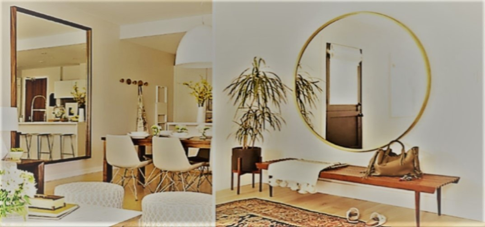

“Sonríe en el espejo. Haz eso todas las mañanas y comenzarás a ver una gran diferencia en tu vida”. Yoko Ono.
“La vida es como un espejo: Te sonríe si la miras sonriendo”. Mahatma Ghandi.
“El espejo refleja todos los objetos sin mancharse”. Confucio.

